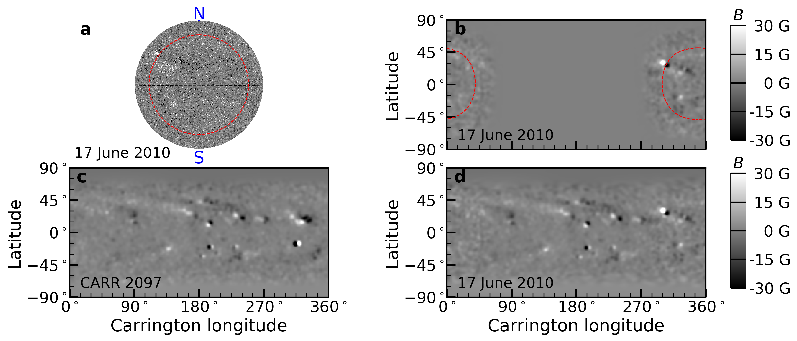
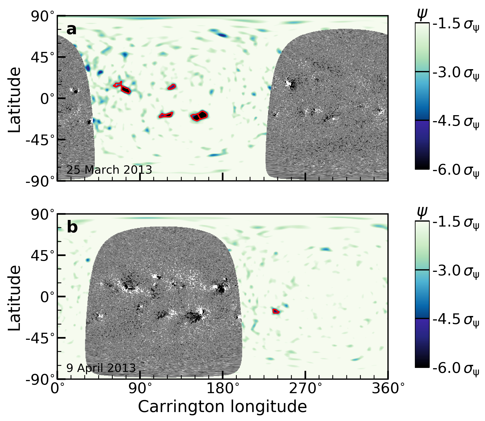
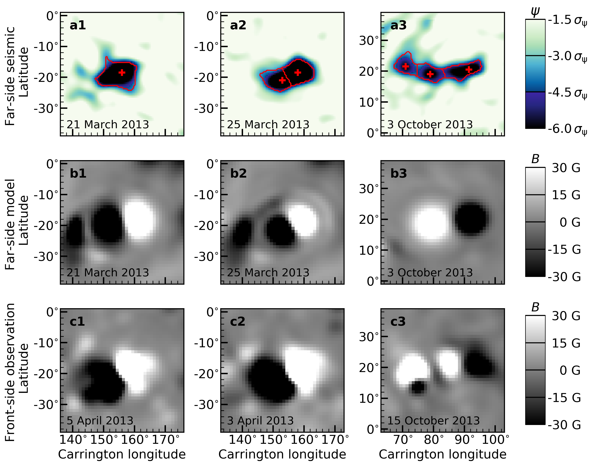
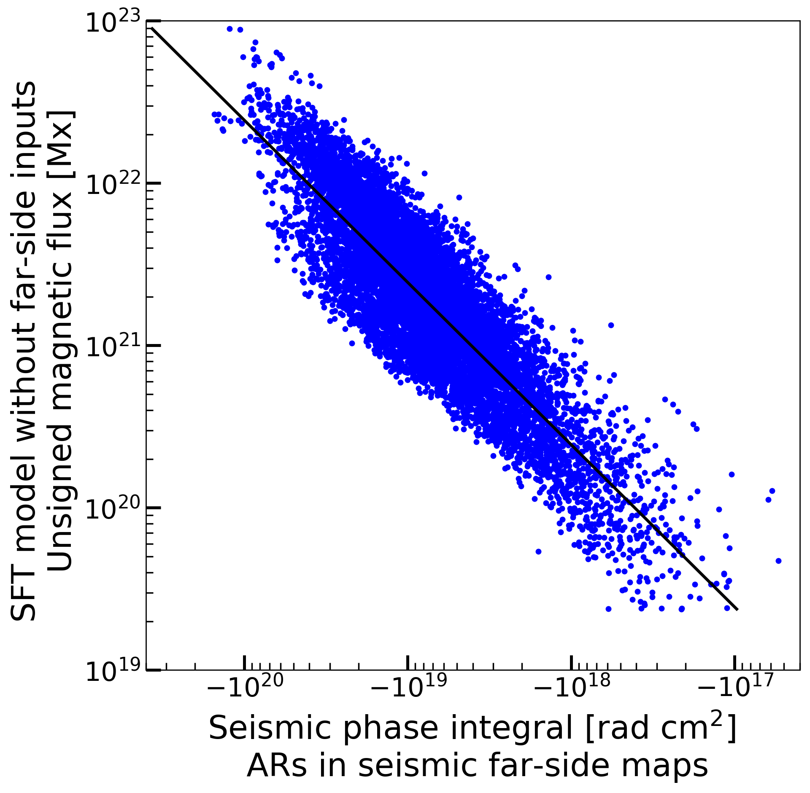
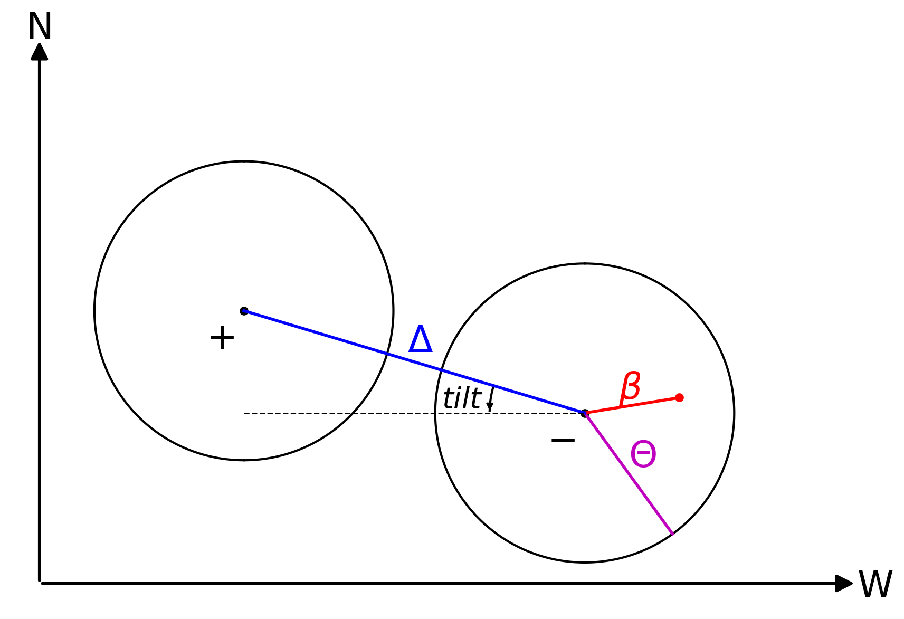
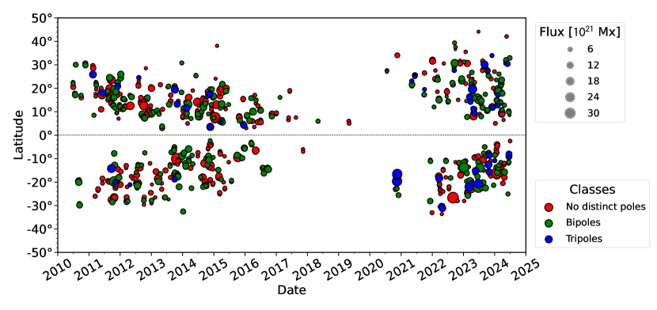
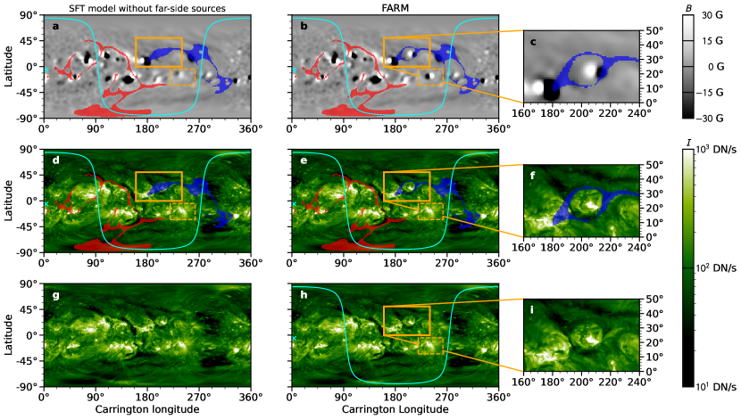
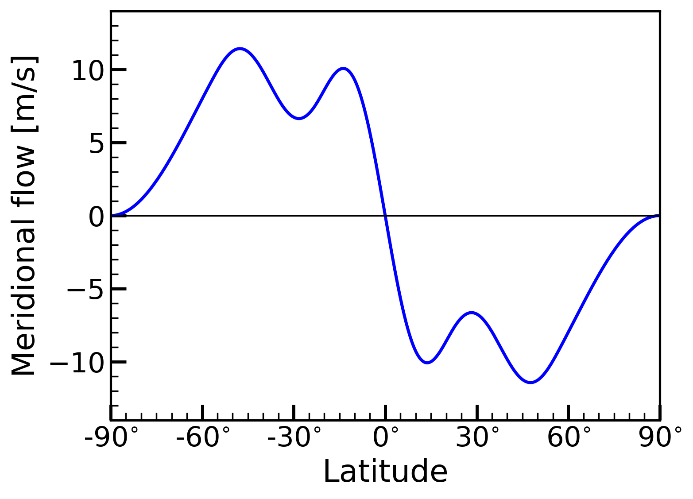
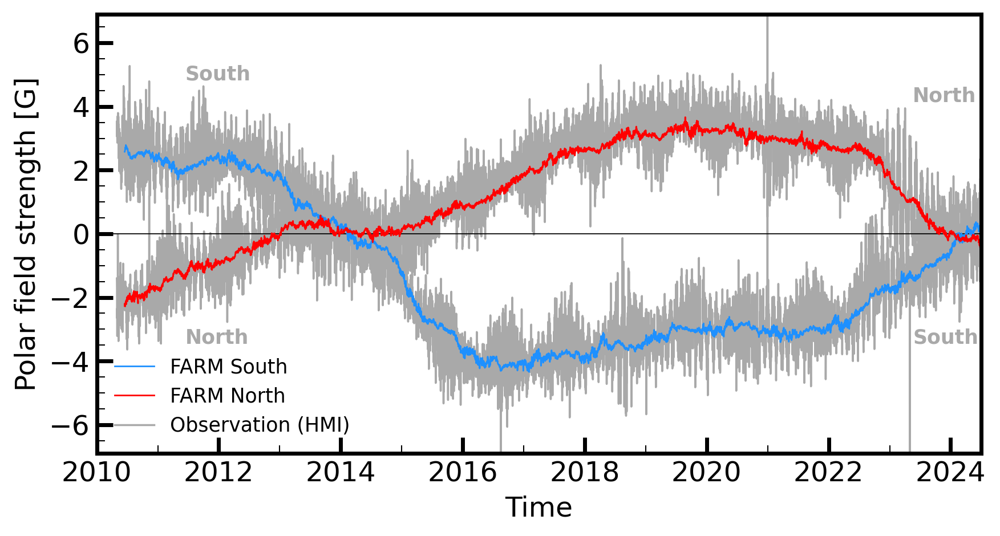
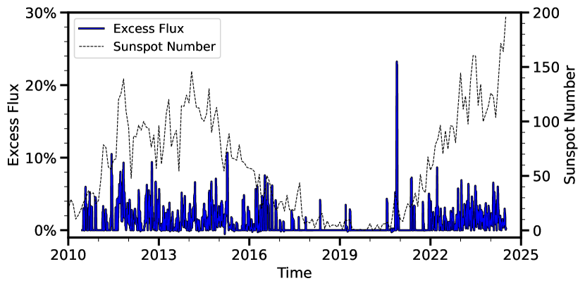

نموذج FARM المدمج لنقل التدفق السطحي والتصوير الزلزالي الشمسي للمناطق النشطة في الجانب البعيد
الملخص
تُستخدم خرائط الحقل المغناطيسي على سطح الشمس على نطاق واسع شروطا حدية في نمذجة طقس الفضاء. غير أن الرصد المستمر لا يتاح إلا للجزء المواجه للأرض من سطح الشمس.
ومن النهج الشائعة للتخفيف من نقص معلومات الجانب البعيد تطبيق نموذج نقل التدفق السطحي (SFT) لنمذجة تطور الحقل المغناطيسي مع دوران الشمس.
يستطيع علم الزلازل الشمسية تصوير المناطق النشطة في الجانب البعيد باستخدام التذبذبات الصوتية، ومن ثم فإنه يملك قدرة كامنة على تحسين الحقل المغناطيسي السطحي المنمذج.
نقترح في هذه الدراسة نهجا جديدا لتقدير الحقول المغناطيسية للمناطق النشطة على الجانب البعيد من الشمس استنادا إلى القياسات الزلزالية الشمسية، ثم ندرجها في نموذج SFT.
لمعايرة التحويل من الإشارة الزلزالية الشمسية إلى الحقل المغناطيسي، نطبق نموذج SFT على مغناطيسوغرامات خط البصر من Helioseismic and Magnetic Imager (HMI) على متن Solar Dynamics Observatory (SDO) للحصول على خرائط مرجعية للحقول المغناطيسية العالمية (بما في ذلك الجانب البعيد). وتُقارن الخرائط المغناطيسية الناتجة بخرائط الطور الزلزالية الشمسية على الجانب البعيد من الشمس
المحسوبة باستخدام الهولوغرافيا الزلزالية الشمسية.
ينعكس التركيب المكاني للحقل المغناطيسي داخل منطقة نشطة في التركيب المكاني لانزياحات الطور الزلزالية الشمسية.
ونسند القطبيات إلى تركزات الحقل المغناطيسي أحادية القطب استنادا إلى قانون هيل، ونشترط توازنا تقريبيا في التدفق بين القطبيتين.
من 2010 إلى 2024، نمذجنا 859 منطقة نشطة، بمتوسط تدفق كلي غير موقّع قدره Mx ومتوسط مساحة قدره km2. وتبيّن أن نحو  من المناطق النشطة لها تكوين مخالف لقانون هيل، وقد صححناه يدويا. أدى تضمين هذه المناطق النشطة في الجانب البعيد إلى زيادة وسطية قدرها (تصل إلى ) في التدفق الكلي غير الموقّع للمغناطيسوغرامات.
وتكشف المقارنات بين مساحات الحقول المفتوحة المنمذجة وأرصاد EUV عن تحسن جوهري في التوافق عند تضمين المناطق النشطة في الجانب البعيد.
تبيّن دراسة إثبات المفهوم هذه القدرة الكامنة لـ “نموذج النقل السطحي للتدفق والتصوير الزلزالي الشمسي للمناطق النشطة في الجانب البعيد” المدمج (FARM) على تحسين نمذجة طقس الفضاء.
من المناطق النشطة لها تكوين مخالف لقانون هيل، وقد صححناه يدويا. أدى تضمين هذه المناطق النشطة في الجانب البعيد إلى زيادة وسطية قدرها (تصل إلى ) في التدفق الكلي غير الموقّع للمغناطيسوغرامات.
وتكشف المقارنات بين مساحات الحقول المفتوحة المنمذجة وأرصاد EUV عن تحسن جوهري في التوافق عند تضمين المناطق النشطة في الجانب البعيد.
تبيّن دراسة إثبات المفهوم هذه القدرة الكامنة لـ “نموذج النقل السطحي للتدفق والتصوير الزلزالي الشمسي للمناطق النشطة في الجانب البعيد” المدمج (FARM) على تحسين نمذجة طقس الفضاء.
keywords:
المناطق النشطة، النماذج؛ الحقول المغناطيسية، الفوتوسفير؛ علم الزلازل الشمسية، الرصد1 المقدمة
تكتسي خرائط الحقل المغناطيسي التي تغطي كامل السطح الشمسي أهمية في نمذجة الشمس والغلاف الشمسي وطقس الفضاء. وتظل قدرتنا على الحصول على مثل هذه الخرائط محدودة، إذ لا يمكن رصد سوى نحو نصف السطح الشمسي مباشرة من الأرض. حتى الآن، يُستخدم نهجان بكثرة في مجتمع طقس الفضاء لبناء خرائط حقل مغناطيسي كاملة السطح: 1) النهج الشمولي الذي يكدّس معا أشرطة من خرائط الحقل المغناطيسي على امتداد دورة شمسية واحدة لتغطية سطح الشمس بأكمله، و2) النهج التزامني الذي يطوّر المغناطيسوغرامات اليومية باستخدام نماذج نقل التدفق السطحي. وقد ثبت أن كلا النهجين يعملان بدرجة معقولة من الجودة، ومع ذلك فإن لكل منهما عيبه الخاص.
تعاني الخرائط الشمولية من ”آثار التقادم”: فالحقل المغناطيسي عند خطوط طول مختلفة يمثّل تطوره في أزمنة مختلفة على امتداد دوران شمسي قدره 27 يوم (مثلا، Heinemann et al., 2021). ويستخدم النهج التزامني نماذج نقل التدفق لمحاكاة تغيرات الحقل المغناطيسي الناجمة عن التدفقات واسعة النطاق ذات التناظر المحوري، مثل التدفقات الزوالية والدورانية، وعن الانتشار الناجم عن تدفقات صغيرة النطاق (مثل ADAPT، Arge et al. 2010 وAFT، Upton and Hathaway 2014)، إلا أن ظهور المناطق النشطة في الجانب البعيد إما لا يُنمذج إطلاقا أو لا يُنمذج على أساس منتظم.
الحل المباشر لهذه المشكلة هو إرسال مركبات فضائية إلى الجانب البعيد من الشمس للحصول على مغناطيسوغرامات. وحتى الآن، يُعد Photospheric and Magnetic Imager (PHI) (Solanki et al., 2020) على متن Solar Orbiter (SO) (Müller et al., 2020) الأداة الوحيدة القادرة على ذلك. وباستخدام مغناطيسوغرامات الجانب البعيد من SO/PHI، بيّن Perri et al. (2024) أن غياب منطقة نشطة واحدة في الجانب البعيد يمكن أن يؤثر في البنية المغناطيسية لا محليا فحسب بل عالميا أيضا. غير أنه، بسبب المدار المعقد لمهمة SO، لا تتاح أرصاد تغطي جزءا مهما من الجانب البعيد للشمس على أساس منتظم. أما STEREO (Solar TErrestrial RElations Observatories, Kaiser et al., 2008) A وB فهما المركبتان الفضائيتان الأخريان اللتان وصلتا إلى الجانب البعيد للشمس قبل مهمة SO بمدة طويلة. وعلى الرغم من أن STEREO لا يوفر مغناطيسوغرامات، فقد أثبت مؤلفون مختلفون بنجاح إمكان اشتقاق بعض معلومات الحقل المغناطيسي من مجموعة SECCHI على متنه (Sun Earth Connection Coronal and Heliospheric Investigation, Howard et al., 2008). استخدم Heinemann et al. (2021) صورا مرشحية لاشتقاق الحقول المفتوحة للثقوب الإكليلية في الجانب البعيد تجريبيا، واستخدم Kim et al. (2019) وJeong et al. (2022) تقنية تعلم آلي لإنتاج خرائط حقل مغناطيسي من أرصاد EUV. وأدرج العمل الحديث لـ Upton et al. (2024) المناطق النشطة في الجانب البعيد ضمن AFT باستخدام صور مرشحية 304 Å بوصفها بدائل للحقول المغناطيسية، مما أظهر فرقا واضحا في التدفقات المفتوحة المنمذجة (Knizhnik et al., 2024). ونتيجة لمدار STEREO، فإن توافر أرصاد الجانب البعيد محدود فقط (نحو 2011-2015 وقت كتابة هذه الدراسة).
يتمثل حل بديل في استخدام التذبذبات الصوتية الشمسية المرصودة من جهة الأرض لمراقبة الأنشطة المغناطيسية على الجانب البعيد من الشمس. وتُعرف هذه الطريقة باسم التصوير الزلزالي الشمسي للجانب البعيد. وقد اقترحها Lindsey and Braun (2000) لدمج التذبذبات الشمسية بطريقة تتيح الحصول على حساسية عظمى للمناطق الممغنطة عند نقاط التركيز على الجانب البعيد من الشمس. وقد ثبت بوضوح أن التصوير الزلزالي الشمسي للجانب البعيد يعمل، وذلك باستخدام صور كروموسفيرية من STEREO (انظر مثلا Liewer et al., 2014; Zhao et al., 2019) ومغناطيسوغرامات خط البصر من SO/PHI (Yang et al., 2023a). وتُستخدم هذه الطريقة روتينيا لمراقبة الجانب البعيد باستخدام أرصاد التذبذبات الشمسية من Solar Dynamics Observatory (SDO)/Helioseismic and Magnetic Imager (HMI)11 1 jsoc.stanford.edu/data/farside ومن National Solar Observatory (NSO)/Global Oscillation Network Group (GONG)22 2 farside.nso.edu.
أظهر العمل الأولي الذي قدمه Arge et al. (2013) أن التصوير الزلزالي الشمسي للجانب البعيد يمكن أن يحسن نمذجة سرعة الرياح الشمسية. ففي عملهم، حُددت منطقة نشطة ثنائية القطب يدويا على خرائط الجانب البعيد الزلزالية وأُدرجت في نموذج ADAPT، مما حسّن الحقول المفتوحة المنمذجة. وهذه نتيجة مشجعة جدا، غير أن قدرا كبيرا من العمل مطلوب للتمكن من تضمين المناطق النشطة في الجانب البعيد وتحديثها منهجيا وتلقائيا. في هذه الدراسة نطوّر نموذج النقل السطحي للتدفق والتصوير الزلزالي الشمسي للمناطق النشطة في الجانب البعيد المدمج، واختصارا FARM، وهي خريطة جديدة للحقل المغناطيسي كامل السطح مبنية على نموذج مثال لنقل التدفق السطحي (SFT) (Baumann, 2005)، وتدرج تلقائيا المناطق النشطة الناشئة حديثا وتحدّث المناطق القائمة على الجانب البعيد الشمسي. ونستخدم خرائط محسّنة للجانب البعيد الزلزالي اقترحها Yang et al. (2023b)، ونحوّل إشارات المناطق النشطة إلى حقول مغناطيسية باستخدام علاقة تجريبية وُجدت في هذا العمل (انظر أيضا González Hernández et al., 2007; Yang et al., 2023a).
2 الطرائق
2.1 نموذج نقل التدفق السطحي

 من JSOC/Stanford باستخدام الخرائط الشمولية من CARR 2097 (19 مايو – 16 يونيو 2010)، وهو ما يُستخدم شرطا ابتدائيا لنموذجنا. اللوحة d: مغناطيسوغرام الخرج الناتج باستخدام نموذج SFT (انظر النصوص في القسم 2.1). تشير المنحنيات الحمراء المتقطعة في اللوحتين a وb إلى المساحة 50∘ داخل مركز القرص.
من JSOC/Stanford باستخدام الخرائط الشمولية من CARR 2097 (19 مايو – 16 يونيو 2010)، وهو ما يُستخدم شرطا ابتدائيا لنموذجنا. اللوحة d: مغناطيسوغرام الخرج الناتج باستخدام نموذج SFT (انظر النصوص في القسم 2.1). تشير المنحنيات الحمراء المتقطعة في اللوحتين a وb إلى المساحة 50∘ داخل مركز القرص.
اتباعا لـ Baumann (2005)، نفترض أن الحقل المغناطيسي الفوتوسفيري موجه شعاعيا، ويرمز إليه بـ  ، وهو حل لمعادلة نقل قياسي سلبي:
، وهو حل لمعادلة نقل قياسي سلبي:
| (1) |
حيث يدل و على العرض المتمم وخط الطول في الإطار المرجعي لكارينغتون. وهنا يرمز إلى نصف قطر الشمس، ويمثل  و
و الدوران التفاضلي والتدفق الزوالي، ويمثل
الدوران التفاضلي والتدفق الزوالي، ويمثل  معامل انتشار فعالا مرتبطا بالحركات فوق الحبيبية غير الساكنة، أما
معامل انتشار فعالا مرتبطا بالحركات فوق الحبيبية غير الساكنة، أما  فهو حد المصدر.
فهو حد المصدر.
بالنسبة إلى ، نستخدم صيغة قياسية للدوران التفاضلي من Snodgrass (1983):
 |
(2) |
وبالنسبة إلى ، نعتمد أحدث نموذج للتدفق الزوالي مشتق من علم الزلازل الشمسية للدورتين الشمسيّتين 23 و24، وهو يأخذ في الحسبان التدفقات الداخلة حول المناطق النشطة (انظر Liang et al., 2018, والشكل 8 في الملحق):
| (3) | ||||
| (4) | ||||
| (5) |
حيث يرمز إلى التدفق الزوالي غير المتأثر، ويمثل التدفق الداخل المرتبط بالمناطق النشطة، أما و فهما السعتان المضبوطتان على m s-1 و m s-1. ويمثل و دالتي نافذة
 |
(6) |
و
 |
(7) |
اللتين تحددان مدى التدفق الداخل.
ينمذج نموذج SFT تطور الحقل بعد ظهوره. وبالنسبة إلى الجانب القريب، يكون الحقل قابلا للرصد مباشرة. لذلك نستخدم مغناطيسوغرامات خط البصر بزمن 720 s من SDO/HMI (Pesnell et al., 2012; Schou et al., 2012) من 17 يونيو 2010 إلى 1 يوليو 2024 بوتيرة إطار واحد في اليوم
لتحديث الحقل المغناطيسي على الجانب المواجه للأرض.
يُقسم كل مغناطيسوغرام على جيب تمام الزاوية بين العمود المحلي على سطح الشمس وخط البصر للحصول على تقريب لـ  ، ثم يعاد إسقاطه إلى الإطار المرجعي لكارينغتون. ويُطبَّق مرشح غاوسي لإزالة المقاييس الصغيرة التي لا نستهدف نمذجتها. ونظرا إلى أن الحقل أكثر موثوقية قرب مركز القرص، فإننا نطبّق تدرجا حافيا على البيانات من 50∘ (المنحنى الأحمر المتقطع في الشكل 1a) حتى الحافة. تُحدّث هذه المغناطيسوغرامات المعالجة يوميا في نموذج SFT (انظر الشكل 1b مثالا)، مع استبدال الحقول المغناطيسية المنمذجة
، ثم يعاد إسقاطه إلى الإطار المرجعي لكارينغتون. ويُطبَّق مرشح غاوسي لإزالة المقاييس الصغيرة التي لا نستهدف نمذجتها. ونظرا إلى أن الحقل أكثر موثوقية قرب مركز القرص، فإننا نطبّق تدرجا حافيا على البيانات من 50∘ (المنحنى الأحمر المتقطع في الشكل 1a) حتى الحافة. تُحدّث هذه المغناطيسوغرامات المعالجة يوميا في نموذج SFT (انظر الشكل 1b مثالا)، مع استبدال الحقول المغناطيسية المنمذجة  بـ ، حيث إن هو دالة نافذة التنعيم المستخدمة للتدرج الحافي.
بـ ، حيث إن هو دالة نافذة التنعيم المستخدمة للتدرج الحافي.
يضبط معامل الانتشار على km2 s-1 لمطابقة سعة الحقل القطبي من الأرصاد (انظر الشكل 9 في الملحق و Cameron et al., 2010). نحل المعادلة 1 في الفضاء الطيفي بدرجات توافقية تصل إلى 80 باستخدام الشفرة التي طورها Baumann (2005). نستخدم الحقول المغناطيسية الشعاعية الشمولية (سلسلة JSOC: hmi.synoptic_mr_polfil_720s) لدوران كارينغتون 2097 بوصفها الابتدائية (انظر الشكل 1c).
حتى هذه المرحلة تنتج الشفرة مغناطيسوغرامات كاملة السطح من دون استخدام صور الجانب البعيد الزلزالية. ويُفترض أن الحقل المغناطيسي في الجانب البعيد يتطور وفقا للمعادلة 1. ولتجنب تغيير الحقول المغناطيسية في الجانب البعيد عند تمثيل بيانات الجانب الأمامي، لا نفرض تدفقا كليا صفريا في نموذج SFT. ويتذبذب التدفق الكلي بين من التدفق الكلي غير الموقّع في المحاكاة.

2.2 صور الجانب البعيد الزلزالية
تُستحصل صور الجانب البعيد الزلزالية بتطبيق الطريقة التي وصفها Yang et al. (2023b) على دوبلرغرامات من SDO/HMI. وعلى وجه التحديد، تُستخدم مقاطع متداخلة من دوبلرغرامات مدتها 31 hr لحساب خرائط انزياحات الطور الزلزالية بوتيرة 12 hr. ونأخذ متوسط خمسة مقاطع متتالية للحصول على خرائط زلزالية مدتها 79 hr، ونستخدم هذه الخرائط لاكتشاف المناطق النشطة في الجانب البعيد. تقع جميع الخرائط الزلزالية في الإطار المرجعي لكارينغتون، بتباعد قدره في اتجاهي خط العرض وخط الطول. ونملّس الخرائط بنواة غاوسية لإزالة المقاييس المكانية الأصغر من حد الاستبانة. لمثال على ذلك، انظر الشكل 2.

 إلى a تكبيرا لخرائط الطور الزلزالي حول مناطق نشطة ذات 1 إلى 3 أقطاب. وتُظهر اللوحات الوسطى b
إلى a تكبيرا لخرائط الطور الزلزالي حول مناطق نشطة ذات 1 إلى 3 أقطاب. وتُظهر اللوحات الوسطى b إلى b
إلى b الحقول المغناطيسية المنمذجة المقابلة باستخدام خرائط الطور الزلزالي كما تظهر في اللوحات العليا. أما اللوحات السفلى c إلى c
الحقول المغناطيسية المنمذجة المقابلة باستخدام خرائط الطور الزلزالي كما تظهر في اللوحات العليا. أما اللوحات السفلى c إلى c فتُظهر المغناطيسوغرامات عندما تظهر المناطق النشطة في مجال رؤية الأرض.
فتُظهر المغناطيسوغرامات عندما تظهر المناطق النشطة في مجال رؤية الأرض.

2.3 تحديد مواضع المناطق النشطة في الجانب البعيد باستخدام الخرائط الزلزالية
نهدف إلى تضمين ظهور المناطق النشطة في نموذج SFT (فالظهورات الأصغر لا يمكن كشفها بموثوقية باستخدام تصوير الجانب البعيد بعلم الزلازل الشمسية). ولتحديد المناطق النشطة في الجانب البعيد، ننشئ قناعا ثنائيا بالاستناد إلى عتبة تبلغ ثلاثة أضعاف الضجيج الزلزالي، ونجمع كل قناع ثنائي بعامل في خطي الطول والعرض (إلى ). تنتقي هذه الطريقة رقعا تشبه مساحة المنطقة النشطة كما تُعرّف بصريا في صور STEREO 304 Å. ونظرا إلى أن المناطق التي تقل أحجامها عن 800 غالبا ما تكون اكتشافات زائفة بسبب الضجيج، فإننا نستبعدها.
عادة ما تحتوي رقعة منطقة نشطة واحدة محددة بالطريقة أعلاه على أكثر من قطب واحد (سمة مغناطيسية). ولفصل الأقطاب الفردية، نحدد القيم الصغرى المحلية داخل كل رقعة بوصفها مركز قطب (انظر الصلبان الحمراء في الأشكال 3 (a1-a3)). ولتحديد أي البكسلات في السمة تنتمي إلى أي قطب، نجد أولا أقصر مسار بين كل زوج من الأقطاب بحيث يقع المسار كله داخل رقعة المنطقة النشطة. ثم نجد القيم العظمى المحلية على طول هذا المسار (حيث يكون الطور الزلزالي الأقرب إلى الصفر). وأخيرا نفصل القطبين بالخط المار عبر القيم العظمى المحلية والعمودي على المسار. لمثال على ذلك، انظر الشكلين 2 و 3a. وقد نُفذت هذه العملية باستخدام scipy وskimage.
2.4 علاقة تجريبية بين الإشارات الزلزالية والحقول المغناطيسية
يفيد Yang et al. (2023a) بوجود علاقة خطية بسيطة بين متوسط انزياحات الطور الزلزالية ومتوسط الحقل المغناطيسي غير الموقّع داخل المناطق النشطة. نهتم في هذا العمل بكيفية الانتقال من انزياحات الطور الزلزالية المتكاملة على المناطق النشطة المحددة إلى مقدار التدفق المغناطيسي غير الموقّع في كل منطقة نشطة. وللحصول على علاقة بين التدفق المغناطيسي غير الموقّع والقياسات الزلزالية، نقصر العينة على المناطق النشطة التي رُصدت على القرص قبل اكتشافها على الجانب البعيد من الشمس. وقد فرضنا هذا القيد باشتراط شدة حقل وسطية لا تقل عن 17 G فوق المناطق النشطة في نموذج SFT. وعلى وجه الخصوص، تُحدد مساحات المناطق النشطة بالخرائط الزلزالية، ويُطبق هذا القيد وقت المقارنة على الجانب البعيد من الشمس. ونفترض أن نموذج SFT يعيد، في المتوسط، إنتاج تطورها بجودة كافية تتيح له إعادة إنتاج مقدار التدفق المغناطيسي غير الموقّع.
 بواسطة الخرائط الزلزالية باستخدام الطريقة الموصوفة في القسم
بواسطة الخرائط الزلزالية باستخدام الطريقة الموصوفة في القسم 2.5 نمذجة الحقول المغناطيسية للمناطق النشطة
أصبح لدينا الآن عدد الأقطاب ومواضعها في منطقة نشطة، وانزياح الطور الزلزالي المتكامل لكل قطب، وعلاقة لتحويل انزياحات الطور المتكاملة إلى تدفقات مغناطيسية. ونصف الآن كيفية نمذجة الحقول المغناطيسية من انزياحات الطور الزلزالية.
إذا كان لدينا قطب معزول واحد، أي لا توجد أقطاب مميزة كما يحددها علم الزلازل الشمسية، فإننا نمذجه على أنه منطقة نشطة ثنائية القطب بافتراض أن إحدى القطبيتين أضعف من أن تُكتشف. تتمركز المنطقة المنمذجة عند مركز المساحة المكتشفة، ويتبع الفصل بين القطبيتين  ما ورد في Cameron et al. (2010)،
ما ورد في Cameron et al. (2010)،
| (9) |
حيث إن  هو المساحة الكلية للمنطقة ثنائية القطب.
وتتبع زاوية الميل Wang and Sheeley (1991)
هو المساحة الكلية للمنطقة ثنائية القطب.
وتتبع زاوية الميل Wang and Sheeley (1991)
| (10) |
حيث إن هو خط العرض لمركز المنطقة. وتُضاف إشارة خط العرض  بحيث تكون للمناطق النشطة التي تطيع قانون جوي زوايا ميل موجبة/سالبة في نصف الكرة الشمالي/الجنوبي. ولرسم تخطيطي للهندسة، انظر الشكل 5.
بحيث تكون للمناطق النشطة التي تطيع قانون جوي زوايا ميل موجبة/سالبة في نصف الكرة الشمالي/الجنوبي. ولرسم تخطيطي للهندسة، انظر الشكل 5.

 على نصف القطر الزاوي لقطبية معطاة، ويمثل المسافة الزاوية بين مركز القطبية ونقطة اعتباطية (النقطة الحمراء).
على نصف القطر الزاوي لقطبية معطاة، ويمثل المسافة الزاوية بين مركز القطبية ونقطة اعتباطية (النقطة الحمراء).إذا احتوت المنطقة النشطة على قطبين أو ثلاثة أقطاب فإننا نمذجها على أنها مناطق نشطة ثنائية القطب. وتُسند قطبية المناطق الثنائية المنمذجة وفقا لقانون هيل، أي إن قطبية القطب القائد (الأكثر غربا) في المنطقة النشطة تُعطى قطبية البقع القائدة لذلك النصف الكروي وتلك الدورة. أما القطب التابع (الأكثر شرقا) فيُعطى القطبية المعاكسة (التابعة). في هذا العمل، نعد 15 ديسمبر 2019 بداية الدورة الشمسية 25. وبالنسبة إلى المناطق النشطة التي تحتوي على ثلاثة أقطاب، ننظر أولا في القطبين ذوي أكبر انزياح طور زلزالي متكامل. ونحدد قطبية هذين القطبين باستخدام قانون هيل كما نفعل في منطقة نشطة ثنائية القطب. ثم ننسب انزياح الطور الزلزالي المتكامل ومساحة القطب الثالث إلى القطب الأقرب إليه مسافة، ونستبعد  في التحليل اللاحق.
في التحليل اللاحق.
نفرض الآن قيد أن يكون التدفق الكلي للمنطقة النشطة صفرا. ونعد التدفقات المغناطيسية لكل قطب، استنادا إلى انزياح الطور المتكامل، تقديرا للتدفق الحقيقي لكل قطب. ويكون القيد دقيقا. ومن ثم تصبح مسألة إيجاد التدفقات الحقيقية زائدة التحديد. ونجد التدفقات التي تحقق القيد بدقة وتقلل الفرق، بمعنى L2، عن القيم المستنتجة من انزياحات الطور الزلزالية الشمسية.
نفترض أن الحقل المغناطيسي الشعاعي لكل قطب موزع مكانيا وفقا لـ
| (11) |
حيث إن  هي المسافة الزاوية إلى مركز القطب، ويحدد
هي المسافة الزاوية إلى مركز القطب، ويحدد  العرض، أما فيُحدد بواسطة التدفق الكلي للقطب. نعرّف منطقة دائرية فعالة ، لها نفس المساحة وموقع المركز للقطب. ويؤخذ
العرض، أما فيُحدد بواسطة التدفق الكلي للقطب. نعرّف منطقة دائرية فعالة ، لها نفس المساحة وموقع المركز للقطب. ويؤخذ  على أنه نصف القطر الزاوي لـ . وبسبب الحد الذي تفرضه الدرجة التوافقية العظمى 80 المستخدمة في نموذج SFT،
إذا كان
على أنه نصف القطر الزاوي لـ . وبسبب الحد الذي تفرضه الدرجة التوافقية العظمى 80 المستخدمة في نموذج SFT،
إذا كان  4∘ فإننا نستبدله بـ 4∘ من أجل 4∘(انظر أيضا Cameron et al., 2010).
4∘ فإننا نستبدله بـ 4∘ من أجل 4∘(انظر أيضا Cameron et al., 2010).
يعرض الشكل 3 أمثلة على  المنمذجة لمناطق نشطة ذات 1 إلى 3 أقطاب (كما تشير الأرقام في أعلى يسار كل لوحة). وتعرض اللوحة العليا (الأشكال 3 (a1-a3)) الخرائط الزلزالية مع المناطق النشطة المكتشفة (الحد الأحمر)، وتعرض اللوحة الوسطى (الأشكال 3 (b1-b3))
المنمذجة لمناطق نشطة ذات 1 إلى 3 أقطاب (كما تشير الأرقام في أعلى يسار كل لوحة). وتعرض اللوحة العليا (الأشكال 3 (a1-a3)) الخرائط الزلزالية مع المناطق النشطة المكتشفة (الحد الأحمر)، وتعرض اللوحة الوسطى (الأشكال 3 (b1-b3))  المنمذجة. ونتابع هذه المناطق النشطة حتى تدخل مجال رؤية الأرض ونعرض
المنمذجة. ونتابع هذه المناطق النشطة حتى تدخل مجال رؤية الأرض ونعرض  المقابلة من SDO/HMI في اللوحة السفلى (الأشكال 3 (c1-c3)).
المقابلة من SDO/HMI في اللوحة السفلى (الأشكال 3 (c1-c3)).
2.6 مصادر الجانب البعيد بوصفها دالة في الزمن
يضاف، لكل قطب، حد مصدر مطابق
| (12) |
حيث إن هو الخطوة الزمنية المستخدمة في نموذج SFT (1 يوم). ويمثل  الحقل المغناطيسي المنمذج للمنطقة النشطة استنادا إلى الخرائط الزلزالية، ويفترض أنه يساوي صفرا عند نقاط تبعد 2 عن مركز القطب؛ ويمثل
الحقل المغناطيسي المنمذج للمنطقة النشطة استنادا إلى الخرائط الزلزالية، ويفترض أنه يساوي صفرا عند نقاط تبعد 2 عن مركز القطب؛ ويمثل  الحقل المغناطيسي من نموذج SFT. أما فهو دلتا كرونيكر، ويساوي واحدا عندما يكون وصفرا خلاف ذلك.
ويكون بحيث يكون التدفق المغناطيسي غير الموقّع لـ أعلى بمقدار
الحقل المغناطيسي من نموذج SFT. أما فهو دلتا كرونيكر، ويساوي واحدا عندما يكون وصفرا خلاف ذلك.
ويكون بحيث يكون التدفق المغناطيسي غير الموقّع لـ أعلى بمقدار  من تدفق ونموذج SFT الموافق من دون مدخلات الجانب البعيد عند
من تدفق ونموذج SFT الموافق من دون مدخلات الجانب البعيد عند  . وتُحسب كل هذه التدفقات وتُقارن قبل تشغيل نموذج SFT مع مصادر الجانب البعيد.
عندما تكون منطقة نشطة موجودة أصلا في نموذج SFT، غالبا ما تكون مساحتها أكبر من مساحة
. وتُحسب كل هذه التدفقات وتُقارن قبل تشغيل نموذج SFT مع مصادر الجانب البعيد.
عندما تكون منطقة نشطة موجودة أصلا في نموذج SFT، غالبا ما تكون مساحتها أكبر من مساحة  ، إذ إن الحقل المغناطيسي لا يستطيع إلا أن يضمحل في النموذج. وستؤدي هذه المساحة الممتدة إلى تدفقات زائدة في نموذج SFT. ولتجنب هذه المشكلة، نجد أولا المساحة ، حيث G ولها تداخل مع
، إذ إن الحقل المغناطيسي لا يستطيع إلا أن يضمحل في النموذج. وستؤدي هذه المساحة الممتدة إلى تدفقات زائدة في نموذج SFT. ولتجنب هذه المشكلة، نجد أولا المساحة ، حيث G ولها تداخل مع  في نموذج SFT. ثم نستبدل
في نموذج SFT. ثم نستبدل  داخل بالانحراف المعياري لقيم الشمس الهادئة، الذي نحصل عليه باستخدام
داخل بالانحراف المعياري لقيم الشمس الهادئة، الذي نحصل عليه باستخدام  في نموذج SFT عند كل خطوة زمنية من أجل G. وتُعطى إشارة سالبة للنقاط ذات القطبية السالبة في نموذج SFT قبل تضمين مصدر الجانب البعيد.
لا تُطبق عملية التنظيف هذه إلا عندما يكون التدفق غير الموقّع لـ
في نموذج SFT عند كل خطوة زمنية من أجل G. وتُعطى إشارة سالبة للنقاط ذات القطبية السالبة في نموذج SFT قبل تضمين مصدر الجانب البعيد.
لا تُطبق عملية التنظيف هذه إلا عندما يكون التدفق غير الموقّع لـ  من أكبر بمقدار 4 مرة من التدفق غير الموقّع لـ
من أكبر بمقدار 4 مرة من التدفق غير الموقّع لـ  من المساحة المتبقية في .
من المساحة المتبقية في .
2.7 المناطق النشطة المخالفة لقانون هيل
كما ذُكر سابقا، فإن أحد أوجه القصور الرئيسة في استخدام الخرائط الزلزالية الشمسية لاشتقاق المناطق النشطة في الجانب البعيد هو غياب معلومات القطبية. إضافة إلى ذلك، وعلى الرغم من أننا نستطيع تقدير القطبية وتكوين الأقطاب باستخدام قانون هيل وقانون جوي، فإن ذلك لا يفسر جميع المناطق النشطة. فقد تظهر مناطق نشطة تكون قطبيتها القائدة معاكسة لتلك التي يتنبأ بها قانون هيل. وتُعرف هذه باسم المناطق النشطة “الطفيلية” أو “المخالفة لقانون هيل” (مثلا، Wang and Sheeley, 1989). ولا يستطيع نموذجنا تمييز المناطق النشطة المخالفة لقانون هيل، خصوصا من دون معلومات الحقل المغناطيسي عندما تدور المنطقة النشطة إلى مجال رؤية الأرض. قارنا يدويا قطبيات المناطق النشطة في الجانب البعيد بقطبية المناطق النشطة عند الموضع نفسه (في إطار Carrington بعد التصحيح للدوران التفاضلي) عندما تكون في مركز القرص كما تُرى من الأرض. وقد أتاح لنا ذلك تحديد 36 منطقة نشطة منمذجة ذات قطبية غير صحيحة، وهي تمثل من جميع المناطق النشطة المنمذجة.
وعلى الرغم من الجهود المبذولة لتصحيح القطبية للمناطق المخالفة لقانون هيل، لم يتسن مطابقة كل المناطق النشطة المنمذجة مع منطقة نشطة مقابلة في بيانات الحقل المغناطيسي على الجانب المواجه للأرض. ومن أسباب ذلك مناطق نشطة تلاشت قبل أن تدور الشمس إلى الجانب الأمامي وتكوينات معقدة أكثر من أن تسمح بربط واضح. وقد وقع ما مجموعه 26 منطقة نشطة، أو من المناطق النشطة المنمذجة، ضمن هذه الفئة. وبما أننا لم نتمكن من تحديدها بوضوح على أنها آثار اصطناعية أو ذات قطبية خاطئة، فإنها تبقى في النموذج.

| Seismic observations | Model | Number | Percentage | Area | Total Flux |
|---|---|---|---|---|---|
| [N] | [] | [km] | [Mx] | ||
| No distinct poles | Bipole | ||||
| Bipole | Bipole | ||||
| Tripole | Bipole | 11.11 | |||
| Total | 6735.08 |
∗ هذه القيمة أكبر بأكثر من ست مرات من المساحة السطحية الكلية للشمس.
3 الإحصاءات
على مدى فترة تمتد 14 سنة، من 17 يونيو 2010 إلى 1 يوليو 2024، أدرجنا 859 منطقة نشطة واقعة في الجانب البعيد، وهي مناطق نشطة إما ظهرت على الجانب البعيد أو أظهرت زيادة في التدفق لا تقل عن مقارنة بالمناطق النشطة القائمة في المواضع نفسها. وقد تُدرج منطقة نشطة واحدة مرات متعددة عند خطوات زمنية متتالية إذا تحققت شروط النمو. وتتراوح مساحة المناطق النشطة المدرجة بين و، بمتوسط مساحة قدره . ويبلغ متوسط التدفق الكلي غير الموقّع للمناطق المنمذجة ، ويتراوح بين و. ويسرد الجدول 1 نسبة مصادر الجانب البعيد لكل تكوين مغناطيسي معني، إلى جانب متوسط التدفق الكلي غير الموقّع والمساحة المرتبطين به. ويبلغ متوسط الزمن بين ظهور منطقة في الجانب البعيد في نموذج SFT لدينا والزمن الذي تدور فيه إلى مركز القرص في مجال رؤية الأرض أيام، وهو ما يتسق مع توقعاتنا.
يُعرض توزيع المناطق النشطة المدرجة بوصفه دالة في الزمن وخط العرض والتدفق المغناطيسي الكلي غير الموقّع والتكوين المغناطيسي (عدد الأقطاب) في الشكل 6. تتبع مصادر الجانب البعيد مخططات فراشة البقع الشمسية، إذ تظهر المناطق النشطة عند خطوط عرض أعلى خلال طور الصعود، وبصورة رئيسة أقرب إلى خط الاستواء خلال الأطوار الأخرى. إضافة إلى ذلك، لم تُكتشف وتُدرج إلا مناطق نشطة قليلة في الجانب البعيد خلال الحد الأدنى الشمسي (2017-2021). ومالت أكثر تكوينات المناطق النشطة تعقيدا إلى الظهور تفضيليا خلال الحد الأقصى الشمسي، ولا سيما باتجاه الحد الأقصى الجاري الأحدث حول أواخر 2022 إلى 2024. وتشير هذه الملاحظة إلى أن المناطق النشطة الناشئة أو النامية على الجانب البعيد تسهم على نحو مهم في التدفق الكلي. وعلى امتداد حقبة SDO، تحتوي مغناطيسوغرامات FARM، في المتوسط، على تدفق كلي غير موقّع أعلى بمقدار مما يتنبأ به النموذج من دون ظهورات الجانب البعيد، لكنها قد تحتوي على تدفق أكبر بما يصل إلى في الوقت الذي تُدرج فيه المناطق النشطة في الجانب البعيد. وخلال فترات النشاط الشمسي المرتفع، يزداد الإسهام الوسطي إلى و لعامي 2011-2016 و2022-2024، على التوالي (انظر أيضا الشكل 10 في الملحق). وخلال فترة النشاط الشمسي المنخفض بين 2018 و2021، يكون التدفق الكلي غير الموقّع في FARM وفي نموذج SFT من دون مصادر الجانب البعيد متساويا عمليا بسبب غياب المناطق النشطة الناشئة.

4 الاستنتاجات والآفاق
يعرض هذا العمل طريقة لتحويل إشارات الجانب البعيد الزلزالية إلى حقول مغناطيسية. تُستخدم خرائط الطور الزلزالية في الجانب البعيد لاستنتاج التدفقات المغناطيسية غير الموقّعة. وتُعرّف الأجزاء المغناطيسية المختلفة (الأقطاب) لمنطقة نشطة من خلال البنية المكانية (القيم الصغرى المحلية) في انزياحات الطور الزلزالية الشمسية. ثم يُستخدم قانون هيل لإسناد قطبية إلى كل سمة مغناطيسية في كل منطقة نشطة.
تُستخدم الحقول المغناطيسية الناتجة لتحسين نموذج نقل التدفق السطحي (SFT) المطبق على مغناطيسوغرامات SDO/HMI. يعرض الشكل 7 مثالا لحقل مفتوح منمذج باستخدام نموذج SFT مع تضمين ظهورات الجانب البعيد ومن دونه. ولتجنب الحقول الكهربائية الزائفة، يوازن التدفق ضربيا قبل إجراء حسابات الحقل المفتوح. وعلى وجه التحديد، يعاد تحجيم القطبيتين خطيا بطريقة تجعل التدفق الكلي صفرا مع حفظ التدفق الكلي غير الموقّع. ويُرى تحسن واضح في الحقول المفتوحة باستخدام مغناطيسوغرامات FARM وصور STEREO 195 Å. يقيس Solar Orbiter، وهو الآن عامل، الحقول المغناطيسية لسطح الشمس من زوايا مختلفة بين الأرض والشمس والمركبة الفضائية، بما في ذلك الجانب البعيد. ويوفر ذلك فرصة ممتازة للتحقق من FARM ومعايرته. وعلى وجه الخصوص، يمكن مقارنة هذه القياسات بالخرائط الزلزالية لتنقية الصورة والحصول على علاقة أدق بين انزياحات الطور الزلزالية والحقول المغناطيسية لتحسين دقة مغناطيسوغرامات FARM.
تبيّن دراسة إثبات المفهوم هذه أن مغناطيسوغرامات FARM تمتلك القدرة على تحسين نمذجة الرياح الشمسية على نحو كبير، ومن ثم إنتاج حقول مغناطيسية غلافية شمسية أدق لتنبؤات طقس الفضاء.
Acknowledgements.
نشكر محكما مجهولا على تعليقاته المفيدة. تتاح بيانات صور SDO وSTEREO بفضل NASA والفرق العلمية المعنية.صمم D.Y. البحث ونفذ النموذج. وحدد S.G.H. المناطق النشطة المخالفة لقانون هيل، وأجرى التحليل الإحصائي، ونفذ حساب الحقول المفتوحة. ناقش جميع المؤلفين النتائج وأسهموا في المخطوط النهائي.
يقر D.Y. وR.H.C. وL.G. بالدعم المقدم من منحة ERC Synergy المسماة WHOLE SUN 810218. ويقر S.G.H. بالتمويل من Austrian Science Fund (FWF): زمالة Erwin-Schrödinger J-4560. ويقر L.G. بالدعم من منحة Deutsche Forschungsgemeinschaft (DFG) رقم SFB 1456/432680300 Mathematics of Experiment (المشروع C04) ومن NYUAD Center for Astrophysics and Space Science.
البيانات المتولدة خلال الدراسة الحالية متاحة من المؤلف المراسل بناء على طلب معقول.
References
- Modeling the corona and solar wind using ADAPT maps that include far-side observations. In Proc. Thirteenth International Solar Wind Conference, G. P. Zank, J. Borovsky, R. Bruno, J. Cirtain, S. Cranmer, H. Elliott, J. Giacalone, W. Gonzalez, G. Li, E. Marsch, E. Moebius, N. Pogorelov, J. Spann, and O. Verkhoglyadova (Eds.), AIP Conf. Ser., Vol. 1539, pp. 11–14. External Links: Document Cited by: §1.
- Air Force Data Assimilative Photospheric Flux Transport (ADAPT) Model. In Twelfth International Solar Wind Conference, M. Maksimovic, K. Issautier, N. Meyer-Vernet, M. Moncuquet, and F. Pantellini (Eds.), American Institute of Physics Conference Series, Vol. 1216, pp. 343–346. External Links: Document Cited by: §1.
- Magnetic flux transport on the Sun. Ph.D. Thesis, Georg August University of Gottingen, Germany. Cited by: §1, §2.1, §2.1.
- Surface Flux Transport Modeling for Solar Cycles 15-21: Effects of Cycle-Dependent Tilt Angles of Sunspot Groups. \apj 719 (1), pp. 264–270. External Links: Document, 1006.3061 Cited by: §2.1, §2.5, §2.5.
- Calibration of Seismic Signatures of Active Regions on the Far Side of the Sun. \apj 669 (2), pp. 1382–1389. External Links: Document Cited by: §1.
- How to Estimate the Far-Side Open Flux Using STEREO Coronal Holes. \solphys 296 (9), pp. 141. External Links: Document, 2109.02375 Cited by: §1, §1.
- Sun Earth Connection Coronal and Heliospheric Investigation (SECCHI). \ssr 136, pp. 67–115. External Links: Document Cited by: §1.
- Improved AI-generated Solar Farside Magnetograms by STEREO and SDO Data Sets and Their Release. \apjs 262 (2), pp. 50. External Links: Document, 2204.12068 Cited by: §1.
- The STEREO Mission: An Introduction. \ssr 136, pp. 5–16. External Links: Document Cited by: §1.
- Solar farside magnetograms from deep learning analysis of STEREO/EUVI data. Nat. Astron. 3, pp. 397–400. External Links: Document Cited by: §1.
- The Effects of Including Farside Observations on In Situ Predictions of Heliospheric Models. \apj 969 (2), pp. 154. External Links: Document Cited by: §1.
- Solar meridional circulation from twenty-one years of SOHO/MDI and SDO/HMI observations. Helioseismic travel times and forward modeling in the ray approximation. \aap 619, pp. A99. External Links: Document, 1808.08874 Cited by: Figure 8, §2.1.
- Testing the Reliability of Predictions of Far-Side Active Regions from Helioseismology Using STEREO Far-Side Observations of Solar Activity. \solphys 289, pp. 3617–3640. External Links: Document Cited by: §1.
- Seismic Images of the Far Side of the Sun. Science 287, pp. 1799–1801. External Links: Document Cited by: §1.
- The Solar Orbiter mission. Science overview. \aap 642, pp. A1. External Links: Document, 2009.00861 Cited by: §1.
- Impact of far-side structures observed by Solar Orbiter on coronal and heliospheric wind simulations. \aap 687, pp. A10. External Links: Document, 2404.06794 Cited by: §1.
- The Solar Dynamics Observatory (SDO). \solphys 275, pp. 3–15. External Links: Document Cited by: §2.1.
- Design and Ground Calibration of the Helioseismic and Magnetic Imager (HMI) Instrument on the Solar Dynamics Observatory (SDO). \solphys 275, pp. 229–259. External Links: Document Cited by: §2.1.
- The International Sunspot Number. International Sunspot Number Monthly Bulletin and online catalogue , pp. . Cited by: Figure 10.
- Magnetic rotation of the solar photosphere. \apj 270, pp. 288–299. External Links: Document Cited by: §2.1.
- The Polarimetric and Helioseismic Imager on Solar Orbiter. \aap 642, pp. A11. External Links: Document, 1903.11061 Cited by: §1.
- The Advective Flux Transport Model: Improving the Far Side with Active Regions Observed by STEREO 304 Å. \apj 968 (2), pp. 114. External Links: Document, 2404.04280 Cited by: §1.
- Predicting the Sun’s Polar Magnetic Fields with a Surface Flux Transport Model. \apj 780 (1), pp. 5. External Links: Document, 1311.0844 Cited by: §1.
- Average Properties of Bipolar Magnetic Regions during Sunspot CYCLE-21. \solphys 124 (1), pp. 81–100. External Links: Document Cited by: §2.7.
- Magnetic Flux Transport and the Sun’s Dipole Moment: New Twists to the Babcock-Leighton Model. \apj 375, pp. 761. External Links: Document Cited by: §2.5.
- Direct assessment of SDO/HMI helioseismology of active regions on the Sun’s far side using SO/PHI magnetograms. arXiv e-prints, pp. arXiv:2305.01594. External Links: 2305.01594 Cited by: §1, §1, §2.4.
- Imaging individual active regions on the Sun’s far side with improved helioseismic holography. \aap 669, pp. A89. External Links: Document, 2211.07219 Cited by: §1, §2.2.
- Imaging the Sun’s Far-side Active Regions by Applying Multiple Measurement Schemes on Multiskip Acoustic Waves. \apj 887 (2), pp. 216. External Links: Document, 1912.06736 Cited by: §1.
Appendix A أشكال إضافية


 90∘. وبالنسبة إلى أرصاد HMI، نستخدم شدة الحقل القطبي التي يوفرها JSOC (اسم السلسلة hmi.meanpf_720s بوتيرة 12hr).
90∘. وبالنسبة إلى أرصاد HMI، نستخدم شدة الحقل القطبي التي يوفرها JSOC (اسم السلسلة hmi.meanpf_720s بوتيرة 12hr). 